막고, 쳐내고, 물러서며 세 라운드를 먼저 따는 1대1 대전입니다
공격은 베기, 찌르기, 이중공격, 막는 수는 가드, 쳐내기, 피하는 수는 스텝입니다. 라운드 시간 제한은 없고, 체력이 0이 되면 그 라운드가 끝납니다.
- 승리
- 3선승
- 체력
- 250
- 일반 명중
- −20
- 쳐내다 맞으면
- −50
오른쪽 두 장은 2026.09.18 빌드의 판정 표시 화면입니다.
혼자 13일 동안, 규칙과 수치는 제가 정하고 코드는 AI가 작성했습니다
2026.09.09 – 09.21, 개인 프로젝트, Unity Windows 프로토타입
제가 정한 것
- 행동마다 얻는 것과 내주는 것, 상성의 규칙
- 거리, 체간 등 수치 채택과 위임 범위
- 입력 재생 감사 요청, ‘고쳤다’의 판정 기준
- 직접 플레이로 찾은 문제와 되돌릴 결정
AI가 한 것
- Unity 구현 코드와 입력 재생 검사 작성, 실행
- 맡긴 세부 수치의 후보 제안
- 의상, 담장, 문 생성 코드, 판정 표시 구현
- 커밋 142개 중 108개에 AI 공동 작성 표시
벽 횡스텝: 통하는 박자와 안 통하는 박자를 함께 남겼습니다
옆으로 돌기를 확정 탈출로 만들지 않았습니다. 바로 이어 베면 잡히고, 어설프게 늦추면 빠져나갑니다.
첫 가드 뒤 같은 스텝을 씁니다. 공격자의 다음 칼을 바꿔 보세요.
체력과 상태는 이 촬영 때 함께 저장한 기록입니다. 아래 표시는 이해를 돕기 위해 포트폴리오에서 덧붙였으며, 게임 내 HUD가 아닙니다. 정해진 입력을 재생한 장면으로, 사람 간 대전이나 PC 성능 측정 영상은 아닙니다.
다른 박자까지 비교한 결과와 판정 범위
벽 앞 거리 1, 막은 직후 옆으로 돌 때, 공격자가 다음 칼을 늦춘 시간별 결과
- 0T맞음
- 0.125T피함자리 바뀜
- 0.25T피함자리 바뀜
- 0.5T피함자리 바뀜
- 0.75T맞음자리 바뀜
- 1T맞음자리 바뀜
칸마다 박자, 좌우, 선수를 바꿔 16번 재생했고, 16번 모두 같은 결과였습니다. T는 스텝 한 번의 시간입니다. 2026.09.20 전투 로직의 입력 재생 결과입니다.
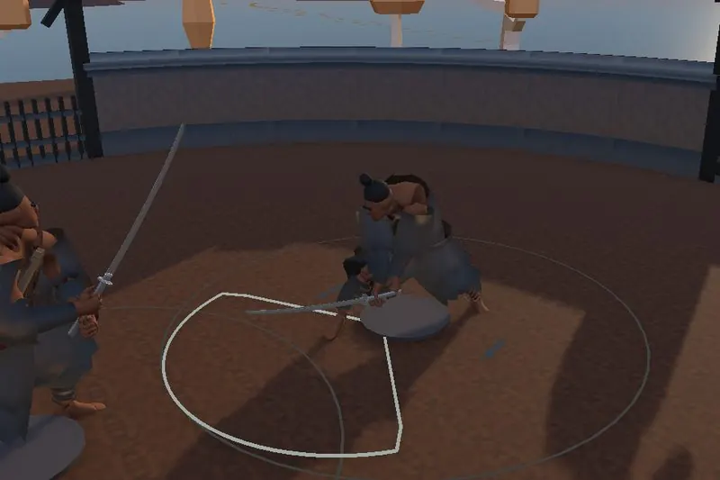
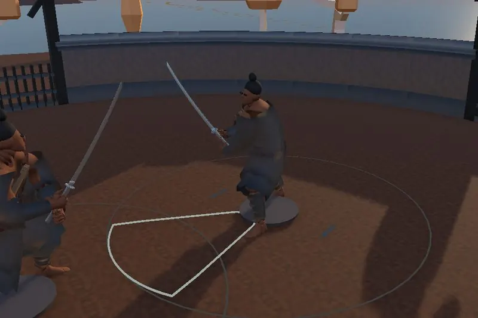
흰 선은 그 순간 실제로 맞는 범위이고, 방향은 휘두르기 시작할 때 고정됩니다. 바로 베면 돌기 전에 닿고, 어설프게 늦추면 이미 돈 뒤라 빗나가고, 충분히 늦추면 돌아간 쪽으로 다시 겨눠 닿습니다. 판정 표시 규칙은 제가 정하고 구현은 AI가 했습니다(2026.09.18 화면).
재생 조건과 판단
4박자 × 4거리 × 벽, 가운데 × 막은 뒤, 맞은 뒤 × 공격자 지연 6 × 방어자 지연 3 × 후속 3 × 좌우 2 × 선수 교환 2 = 13,824회. 공격자가 기다리기만 하는 4,608회는 모두 피해 0이라 뺐습니다.
재생 검사 코드는 AI가 작성했습니다. 성공한 박자만 보고 확정 탈출로 만들지 않고 실패하는 박자를 남긴 판단은 제가 했습니다. 공격자는 벽을 지킬지 박자를 흔들지, 방어자는 더 버틸지 옆으로 돌지를 서로 읽게 됩니다. 영상은 10월 빌드에서 같은 조건으로 찍었고 결과가 같았습니다.
모든 수에 이유와 받아칠 답이 있고, 그 답들이 사슬처럼 이어지는 대전 규칙
전진 공격은 기다리기를, 미리 깔아 둔 공격은 전진 공격을, 기다리기는 미리 깐 공격의 헛침을 이깁니다. 가드, 쳐내기, 스텝에도 각자 대가를 걸어, 어떤 수도 공짜 정답이 되지 않게 규칙 전체를 처음부터 끝까지 설계했습니다.
상대가 반복하는 수를 고르면, 받아칠 답이 보입니다
- 받아칠 답전진 공격
거리를 좁혀
대가: 발동이 조금 느립니다
기다리는 상대를 칩니다 - 그 답의 약점미리 깐 공격
들어올 것을 읽고
대가: 상대가 안 오면 헛칩니다
공격을 먼저 둡니다 - 상대의 수기다리기
먼저 내민 칼이
대가: 전진 공격에 잡힙니다
헛친 뒤를 칩니다
기다리면 → 전진 공격. 다만 상대가 진입을 읽고 미리 공격하면, 들어가는 쪽이 잡힙니다.
왜 보고 반응하면 이기게 두지 않았나요?
이 순환은 중거리에서의 설계 의도입니다. 전진 공격은 횡이동만으로 피할 수 없게 하고, 조금 느리게 시작하도록 했습니다. 대신 들어오는 것을 본 뒤 공격해서는 늦고, 미리 내밀어야 이기게 해 예측할 이유를 남겼습니다.
출처: 설계 의도 문서 “중립 3각”. 거리와 선입력 조건을 생략한 모든 상황의 승패표가 아닙니다.
늘 안전한 수가 하나 있으면, 상대를 읽을 이유가 없어집니다
막기만, 기다리기만 해도 지지 않으면 대전은 반응 속도 싸움이 됩니다. 제가 원한 건 상대의 습관, 거리, 남은 자원을 읽고 수를 바꾸는 대전이었습니다.
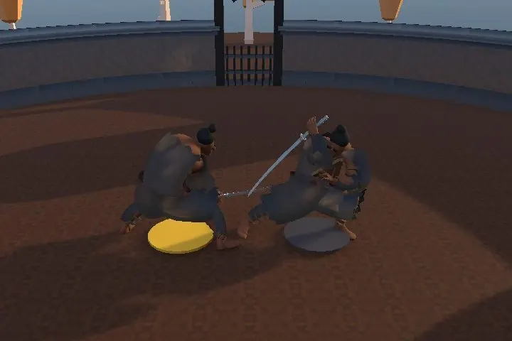
막기만 한다계속 막아도 손해가 없으면, 막는 게 정답입니다.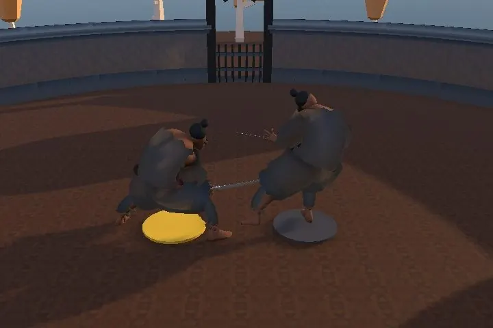
맞고 물러난다맞으면서도 거리를 벌 수 있으면, 막을 이유가 없습니다.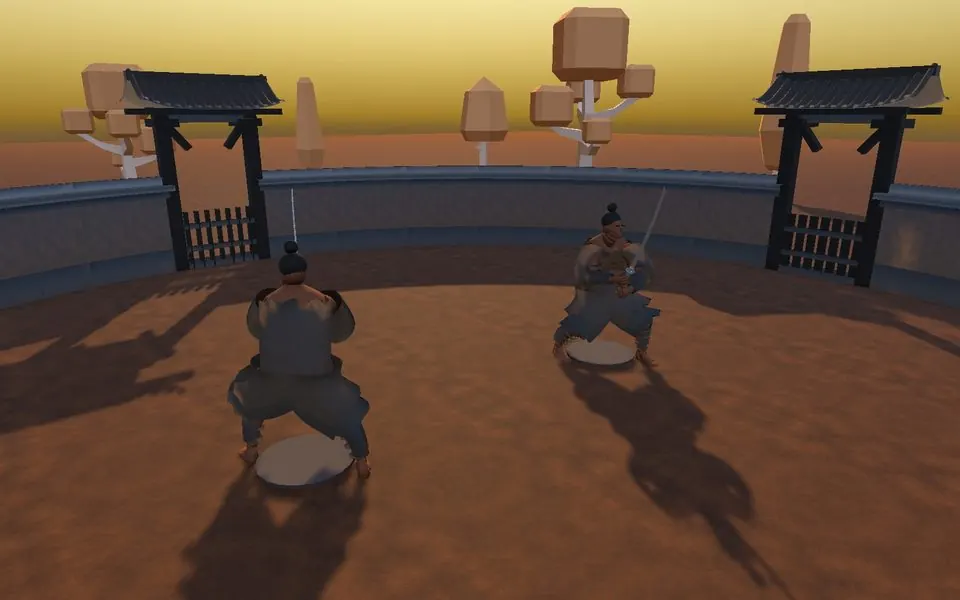
기다린다들어오는 상대를 보고 치면 되니, 먼저 움직일 이유가 없습니다.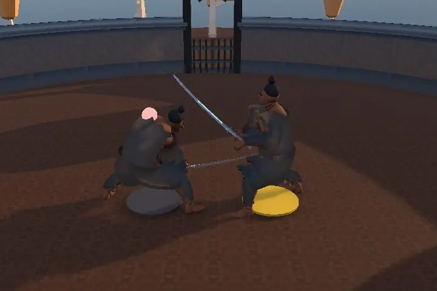
보고 쳐낸다칼을 보고 쳐낼 수 있으면, 예측할 필요가 없습니다.
그래서 얻는 것이 있으면 내주는 것도 있게 했습니다
막으면 체간을, 물러나면 공간을, 압박을 이으면 시간이나 자원을 냅니다. 방어자가 중립으로 돌아가는 길에도 공짜는 없습니다.
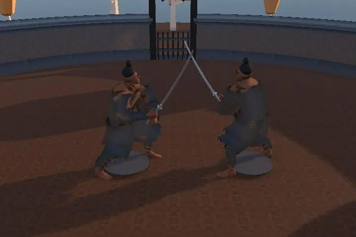
막으면 한 칸 밀려나 거리를 법니다 체간막을수록 더 크게 쌓입니다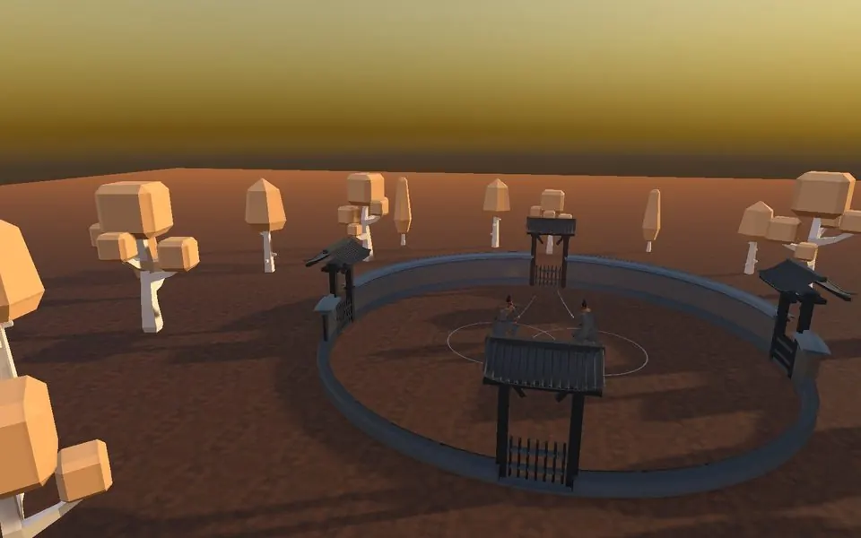
물러나면 한 번의 공격을 피할 시간 공간물러난 만큼 벽이 가까워집니다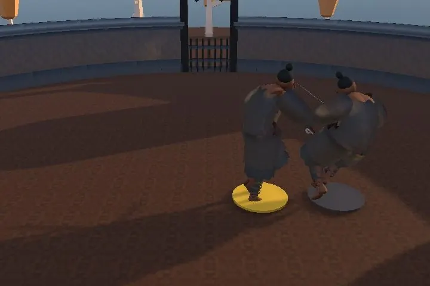
압박을 이으면 공격권을 놓지 않습니다 시간, 자원이동 시간과 스텝 스택이 듭니다왼쪽 화면은 맞거나 막은 순간에서 20틱(1/3초) 뒤입니다. 막은 쪽은 밀려나고, 맞힌 쪽은 따라붙습니다. 맞아서는 거리를 벌 수 없게 한 것입니다.
나머지 수에 건 대가
후퇴: 백스텝 3, 전진 스텝 4로 두었습니다. 물러나는 쪽이 쫓는 쪽보다 빠르면 압박 자체가 성립하지 않기 때문입니다. 한 번은 피해도 계속 쫓기면 잡힙니다.
쳐내기(패링): 칼을 보고 누르면 늦도록, 가드를 뗐다 다시 눌러 미리 깔아 둬야 나갑니다. 이동 직후에는 나가지 않습니다.
기다리기: 전진 공격이 기다리기를, 미리 깔아 둔 공격이 전진 공격을, 기다리기가 미리 깐 공격의 헛침을 이기게 순환시켰습니다.
잃는 크기: 일반 명중은 20, 쳐내기를 빗나가 맞으면 클린히트 50입니다. 반격하다 맞는 것과 쳐내다 맞는 것의 손실이 같으면 쳐내기만 반복하는 방어가 정답이 됩니다.
원칙은 제 설계 의도 문서에, 거리 값은 2026.09.20 거리 기준 문서에 있습니다.
한 국면에서 낸 대가가 다음 국면의 조건이 되게 이었습니다
거리를 벌려 중립으로 돌아가도 처음과 같지 않습니다. 물러난 만큼 벽이 가깝고, 체간은 다 돌아오지 않았습니다.
가드, 후퇴로 거리를 벌리면 다시 간합으로 돌아갑니다.
가드: 두 번 막아야 빠져나갈 틈이 생깁니다
막을 때마다 한 칸씩 밀려나고, 일반공격은 3칸까지 닿습니다. 한 번 막고 물러나면 잡히고, 두 번 막은 뒤부터 피할 수 있습니다.
막을 때마다 벌어지는 거리, 점선은 일반공격이 닿는 거리 3
- 맞은 직후압박 시작1
- 1회 가드물러나면 잡힘2
- 2회 가드물러나 피할 수 있음3
- 3회 가드제자리 공격이 안 닿음4
벽과 추가 이동이 없는 기본 교환 기준입니다. 영상은 13일 작업 뒤 10월 빌드의 전투 로직에 정해 둔 입력을 넣어 자동으로 찍었습니다. 카메라가 촬영 도구의 기본 위치라 두 사람이 겹쳐 보이는 구간이 있습니다.
거리 기준과 사거리
간격 = 1 + 가드 횟수 × 1(벽은 밀림을 막습니다). 가드는 체간을 내고 시간을 사서 탈출할 기회를 만드는 선택이 됩니다.
AI 작업 중 전진찌르기 사거리가 5.5에서 5로 바뀌어 있었습니다. 세 번 막은 뒤(거리 4) 물러나는 상대를 잡으려면 5.5가 필요해 되돌렸고, 조금 늦게 눌러도 닿는 여유로 남겼습니다(결정 기록 D-093 → D-106 → D-143).
체간: 다섯 번은 버티고, 여섯 번째 가드에 무너집니다
막을 때마다 쌓이는 양이 1.5배씩 커져 막기만 하는 방어에는 끝이 있습니다. 끝이 가까울수록 막을지, 쳐낼지, 이중공격일지를 서로 읽게 됩니다.
체간 0에서 연속으로 막을 때, 한도 250
- 16
- 40
- 76
- 130
- 211
- 332.5
더해지는 양은 16, 24, 36, 54, 81, 121.5입니다.
수치를 정한 방법
체력 250, 체간 250, 첫 증가 16, 1.5배를 초기값으로 채택했습니다(D-050). 다섯 번째 211, 여섯 번째 332.5라서 “여섯 번 버틴다”가 아니라 “여섯 번째에 무너진다”로 기록했습니다(D-079). 연속 가드가 끊기거나 중간 회복, 피격이 끼면 다른 계산입니다.
이중공격은 쳐내기 성공을 함정으로 만드는 기술입니다. 첫 칼을 쳐내면 빈틈이 보이지만, 회전 2타가 그 쳐내기를 처벌합니다. 대신 첫 칼을 막은 뒤 반격찌르기를 내면 회전 틈이 끊깁니다. 이중공격도 늘 통하는 수가 되지 않게 한 것입니다(2026.09.17 제가 다시 확인한 의도). 영상은 10월 빌드의 입력 재생입니다.
검사가 통과해도, 게임에서 직접 돌려 본 결과로 판정했습니다
제가 감사를 요청해 실제 입력을 재생하는 검사를 72회에서 468회로 넓혔고, 그 검사도 놓친 장면 파일의 옛 값 8개는 직접 플레이해서 찾았습니다.
입력 재생 검사가 넓어진 기록, 회차 = 장면 × 4박자
- 9.17 첫 감사20 / 72
- 9.17 고친 뒤72
- 9.17 장면 확장132
- 9.18192
- 9.18304
- 9.18324
- 9.19368
- 9.20388
- 9.20396
- 9.20 마지막468
첫 감사에서 20회만 통과(실패 52)했고, 그 뒤로는 매번 모두 통과했습니다. 통과율이 아니라 확인하는 범위가 넓어진 기록입니다. 한 장면을 네 박자(1T = 36, 44, 54, 72틱)로 반복해 센 회차라 독립된 검사 개수는 아닙니다.
2026.09.17 오후, AI가 ‘고쳤다’고 보고한 뒤
61 / 61
설계 규칙 검사 모두 통과, 컴파일 오류 0. 그런데 검사들은 코드에 적힌 기본값만 읽고 있었습니다.
| 값 | 장면 | 코드 | 증상 |
|---|---|---|---|
| 거리 1의 실제 길이 | 0.7 | 0.47 | 칼이 안 닿음 |
| 두 몸 사이 표시 간격 | 1.1 | 0.5 | 칼이 안 닿음 |
| 경기장 반지름 | 10 | 12 | 경기장이 좁음 |
| 공격 판정 시간 | 0.3T | 0.6T | 미리 내미는 공격이 안 됨 |
| 중립 걷기 배율 | 1.25 | 1.1 | 걸음이 느림 |
| 이중공격 게이지 칸 | 10 | 5 | 이중공격이 안 나감 |
| 중립 찌르기 예비동작 | 0.75T | 0.25T | 예비동작이 김 |
| 가드 중 패링 준비 | 없음 | 0.25T | 가드 유지 패링이 안 됨 |
“돌렸어 해보니 안고쳐진 거 많은데? 검증하고 하나씩 다 고쳐 다시”
고친 것과 바꾼 기준
Unity가 장면 파일에 값을 따로 저장해, 코드를 고쳐도 게임은 옛 값으로 돌고 있었습니다. 에러도 경고도 없었습니다. AI가 장면의 값 24곳, 참조 17곳을 고치고, 코드 기본값이 바뀌면 장면 값을 되돌리는 장치와 장면 검증 도구를 넣었습니다.
그 뒤로 ‘고쳤다’는 게임이 그 값을 들고 도는 것을 확인했을 때만 씁니다. 감사 요청, 직접 플레이, 판정은 제가, 검사 코드 작성과 수정은 AI가 했습니다. 계산이 통과하는 것과 재미가 검증되는 것은 별개로 다뤘습니다.
13일 동안 규칙이 사슬처럼 이어지는 대전을 붙어 볼 수 있게 만들었습니다
Windows 프로토타입, AI 상대 세 난이도, 튜토리얼까지 만들고, 직접 플레이하며 고쳤습니다. 에셋을 채워 2026년 12월 말 itch.io에 공개하고, 처음 해 보는 사람들의 피드백을 받을 예정입니다.
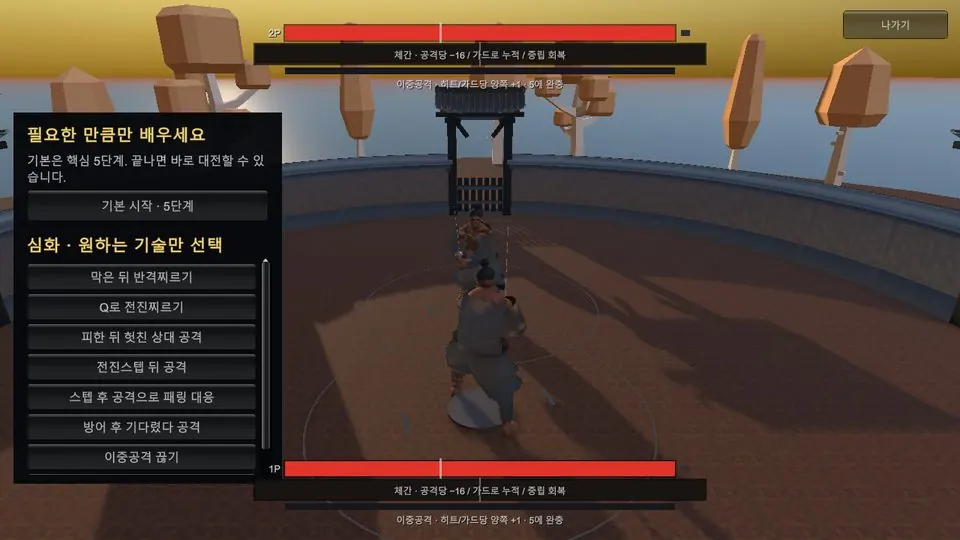
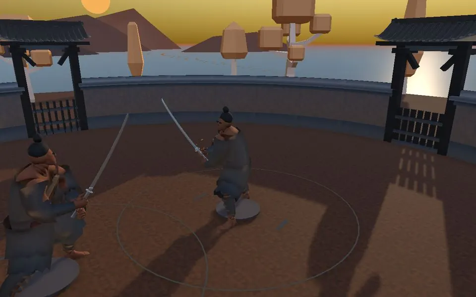
- 에셋 채우기
- 2026.12 말 itch.io 공개
- 외부 대전 피드백